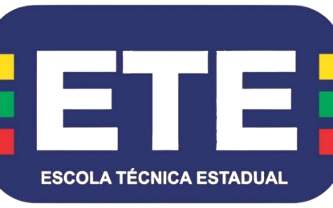
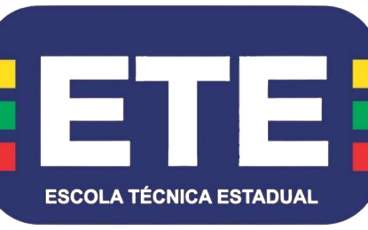

Reserva Ecológica Carnijó Cidade:
A Reserva Ecológica Carnijó fica situada no município de Moreno, a 34km do Recife, com uma área de 135 hectares. Possui um patrimônio ambiental diversificado, com resquícios da Mata Atlântica, bosques, rios, riachos, açudes e represas, além de típica fauna e flora tropical. O local proporciona atividades como trilhas e caminhadas ecológicas e atividades de educação ambiental. Oferece também serviços de alimentação para os visitantes através do Restaurante Sabor do Engenho.
Vegetação
É predominantemente do tipo Floresta Subperenifólia, com partes de Floresta Hipoxerófila.
Relevo e clima
Faz parte da unidade das Superfícies Retrabalhadas que é formada por áreas quetêm sofrido retrabalhamento intenso, com relevo bastante dissecado e vales profundos.Sobre seu clima, possui caracteristicas tropicais chuvosos com verão seco.

